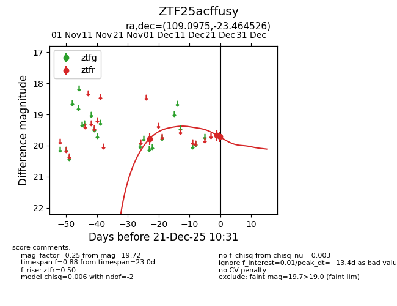
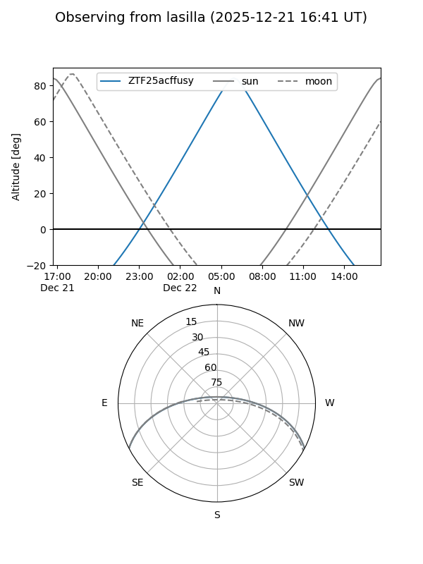
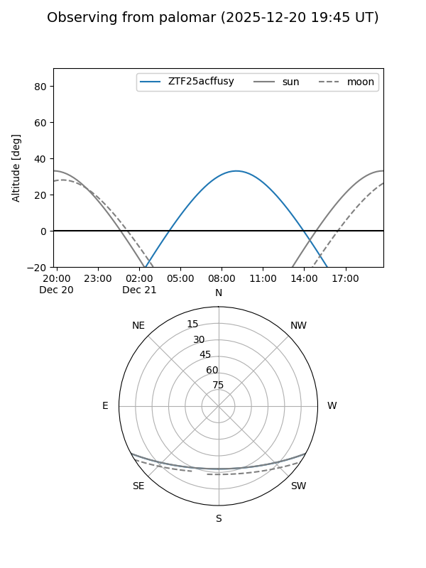
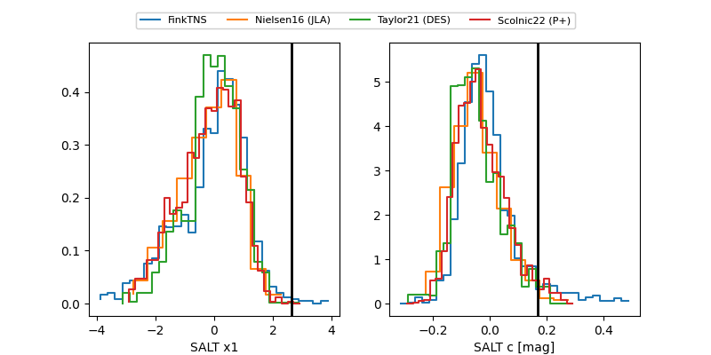

ZTF25acffusy
Target ZTF25acffusy at 2025-12-23 10:37
Aliases and brokers:
FINK: fink-portal.org/ZTF25acffusy
Lasair: lasair-ztf.lsst.ac.uk/objects/ZTF25acffusy
ALeRCE: alerce.online/object/ZTF25acffusy
alt names
ZTF25acffusy (ztf,fink_ztf)
Coordinates:
equatorial (ra, dec) = 109.0975,-23.46453
equatorial (HMS+DMS) = 07:16:23.41,-23:27:52.29
galactic (l, b) = (236.6077,-5.32789)
Flags:
Photometry:
last ztfr=19.72
3 ztfr detections
Lightcurve

Visibility


Additional plots
